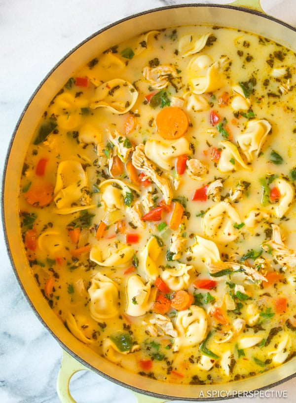
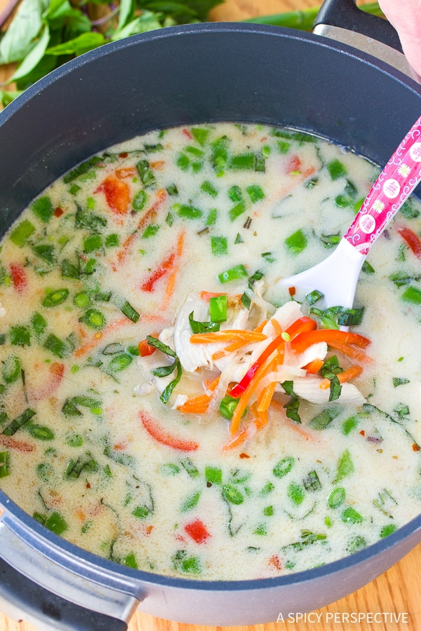
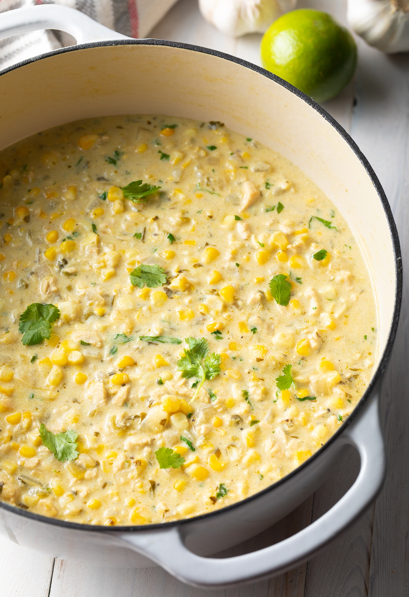

Let's talk about soup!
There's something about soup that is incredibly comforting. The idea of throwing a myriad of ingredients into a big pot of stock and letting it do its own thing is absolutely magical. It can be something as simple as some vegetables simmered in broth or something more complex and time-consuming that leaves you with a bubbling cauldron of rich flavor. It is cooking at its simplest and yet it can be so refined.
Usually considered a wintertime staple, many cultures around the world favor soup even in the summertime. This is where soup's flexability shines, allowing us to enjoy a rich, hearty soup in the wintertime or a light, refreshing soup during the warmer months.
Here are just a few of my favorite soup recipes that can be enjoyed at any time during the year.
Creamy Chicken Tortellini Soup

Ingredients
- 1 tablespoon Extra Virgin Olive Oil
- 1 large sweet onion, peeled and chopped
- 1 red bell pepper, seeded and chopped
- 2 cups carrots, sliced
- 4 cloves garlic, minced
- 1 1/4 pounds boneless skinless chicken breast (2 large breasts)
- 9 cups chicken broth
- 8.8 ounces package Three-Cheese Tortellini Pasta
- 1/4-1/3 cup heavy cream
- 2 tablespoons packed frozen spinach or 1/2 cup fresh baby spinach leaves
- 2 tablespoons fresh chopped parsley
- 1 1/2 teaspoons dried thyme leaves or 1 tablespoon fresh thyme leaves
- 1/2 teaspoon crushed red pepper
- Salt and pepper
Procedure
- Place a large sauce pot over medium heat. Add the olive oil and chopped onions. Saute for 3 minutes to soften. Then add the chopped bell pepper, carrots, and garlic. Saute another 3 minutes.
- Add whole raw chicken breasts, chicken broth, dried thyme, crushed red pepper, 1 teaspoon salt, and 1/4 teaspoon ground black pepper to the pot. Bring to a simmer. Lower the heat a little and simmer 15 minutes, until the chicken in cooked through. Remove the chicken and place on a cutting board.
- Turn the heat back to medium. With the broth still simmering, stir in the DeLallo Three Cheese Tortellini. Stir well so it doesn't stick together. Then chop or shred the chicken and place back in the soup.
- Once the tortellini is cooked through, about 10-14 minutes, turn off the heat. Stir in 1/4 cup heavy cream, spinach, and parsley. Add a little more cream if desired. Taste, then salt and pepper as needed.
Spicy Thai Chicken Soup

Ingredients
- 1 1/2 pounds boneless skinless chicken breast, sliced thin
- 1 large onion, peeled and sliced thin
- 1 red bell pepper, quartered and sliced thin
- 1 cup shredded carrots
- 1 cup thinly sliced snap peas
- 1/2 cup roughly chopped thai basil
- 2 tablespoons vegetable oil
- 1 teaspoon sesame oil
- 1/4 - 1/2 teaspoon crushed red pepper
- 2 tablespoons freshly grated ginger, grated
- 4 cloves garlic, minced
- 64 ounces chicken stock
- 1 1/2 cups unsweetened coconut milk
- 1/4 cup fish sauce
- 1/2 cup chopped green onions for garnish
Procedure
- Place a large sauce pot over medium-high heat. Add both oils to the pot, followed by the onions. Saute the onions for 2-3 minutes, stirring regularly. Then add the garlic and ginger and saute for 1 more minute.
- Add the stock, coconut milk, fish sauce and crushed red pepper. Bring to a boil. Simmer for 10 minutes. Then add the sliced chicken. Stir to separate, then simmer another 5-8 minutes until the chicken is cooked through.
- Turn off the heat and add the red bell peppers, carrots, snap peas and basil. Cover the pot and steep the vegetable for 5 minutes, until barely cooked through, but still firm. Taste, then salt and pepper as needed. Serve warm with a sprinkle of chopped green onions.
Mexican Street Corn Chicken Chili

Ingredients
- 2 teaspoons olive oil
- 1 large sweet onion, peeled and chopped
- 4-5 cloves garlic, minced
- 1 large jalapeno, seeded and chopped
- 1/3 cup chopped cilantro
- 2 teaspoons ground cumin
- 1 teaspoon dried oregano
- 1/4-1/2 teaspoon cayenne pepper
- 4 cups chicken broth
- 1 1/2 pounds boneless skinless chicken breast
- 7 ounce chopped green chiles, mild or medium
- 4 cups fresh corn cut off the cob (about 4-5 cobs)
- 2 cups sour cream
- 1 cup shredded pepper jack cheese
- 1 tablespoon cornstarch
- 1 lime, juiced
- Salt and pepper
- Possible garnishes: More cilantro or shredded cheese, avocado slices, lime wedges, or tortilla chips
Procedure
- Set a large 6-8 quart soup pot (or dutch oven) over medium heat. Add the oil and chopped onions. Saute the onions for 2-3 minutes, stirring. Then add in the garlic, jalapeno, cilantro, cumin, oregano, and cayenne pepper. Saute another 2-3 minutes to soften.
- Add the chicken broth, whole chicken breasts, and chopped green chiles to the pot. Season with 1 teaspoon salt and 1/4 teaspoon ground black pepper. Bring to a boil. Then simmer for 20 minutes until the chicken is cooked through.
- Meanwhile, cut the corn off the cobs and set aside.
- Use tongs to remove the cooked chicken from the pot. Add the corn, to the pot and stir. Then chop or shred the chicken breasts, and place the meat back into the pot.
- Stir in the sour cream and shredded cheese. Stir rapidly as you sprinkle the cornstarch over the top of the chili. (Stirring fast helps reduce clumps.)
- Simmer for 3-5 minutes until the chili base thickens. Then turn off the heat and stir in the lime juice. Ladle into bowls and serve with your favorite garnishes.